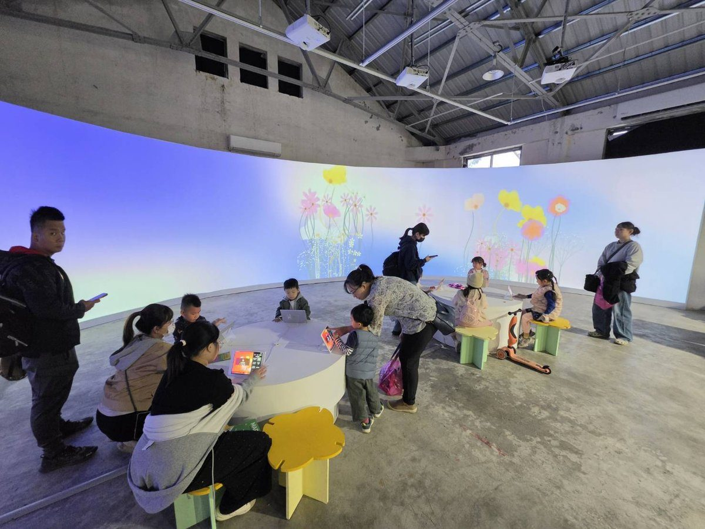

花蓮永續風格展閉幕 8天吸近6萬人次

可樂電子報小編/編輯
花蓮縣政府主辦的「大山大海．花現未來」花蓮永續風格展，21日在花蓮縣運動休閒園區正式閉幕。八天展期共吸引近6萬人次參觀，帶領民眾從不同角度認識花蓮，展現花蓮兼具自然、人文與創新能量的永續發展成果，也為這場結合城市願景與生活美學的盛會畫下精彩句點。現場以七大在地代表動物帶路，串聯各主題展區。

展期期間，每天都有許多民眾及幼兒園師生走進展區，跟隨可愛動物展開一場充滿趣味的探索之旅。搭配動態光影、沉浸式場景與豐富多元的靜態展示，營造出宛如大型戶外探索教室的展覽空間，現場並規劃闖關遊戲、工作坊體驗課等活動，讓大小朋友透過動手操作、創意彩繪及趣味探索，在寓教於樂中認識花蓮的自然生態、在地文化與永續理念。

花蓮縣長徐榛蔚表示，縣府主動與地方對話，結合基礎建設、人文藝術、河川保育與青年創業，全面推動地方永續發展。感謝花蓮縣議會及各鄉鎮市公所的全力支持，以及縣府團隊的用心付出，攜手打造大花蓮願景，完整呈現眾人齊心築夢的豐碩成果與未來展望。雖然展覽正式落幕，但永續發展的腳步不會停歇。

閉幕當日最受矚目的「山海療癒草地音樂會」，邀請蔡旻佑、溫蒂漫步 Wendy Wander、鼓鼓等人氣卡司，攜手花蓮在地藝舞蓉文化藝術團等多組接力演出，以豐富多元的音樂風格，為展覽最後一天注入熱情與活力。民眾在遼闊的草地上，伴隨音樂、微風與山海意象，享受悠閒愜意的午後時光，讓藝術、音樂與自然環境交織出獨特的花蓮生活風景。

透過知名音樂人與在地創作者同臺演出，不僅展現花蓮多元的音樂文化，也讓地方藝文能量有更多被看見的機會。花蓮縣政府表示，「大山大海．花現未來」不只是一場展覽，更是一場邀請全民共同參與的永續行動，期盼讓更多人認識花蓮、親近土地，將珍惜自然、守護環境及支持在地的理念帶回日常生活。

縣府指出，從政策成果展示、環境教育推廣，到親子互動、藝術體驗及音樂展演，都希望讓永續成為生活中的日常選擇。未來將持續結合地方特色與創新思維，深化跨域合作，讓花蓮的自然、人文與產業持續共好，朝向更具韌性、更有溫度的永續城市願景穩健邁進。縣府邀請民眾把這份感動化為行動，從日常守護花蓮的山海。
🌟 掌握花蓮在地第一手資訊・歡迎訂閱追蹤
深度紀實報導、在地精采影音專題，第一時間接收最新消息！